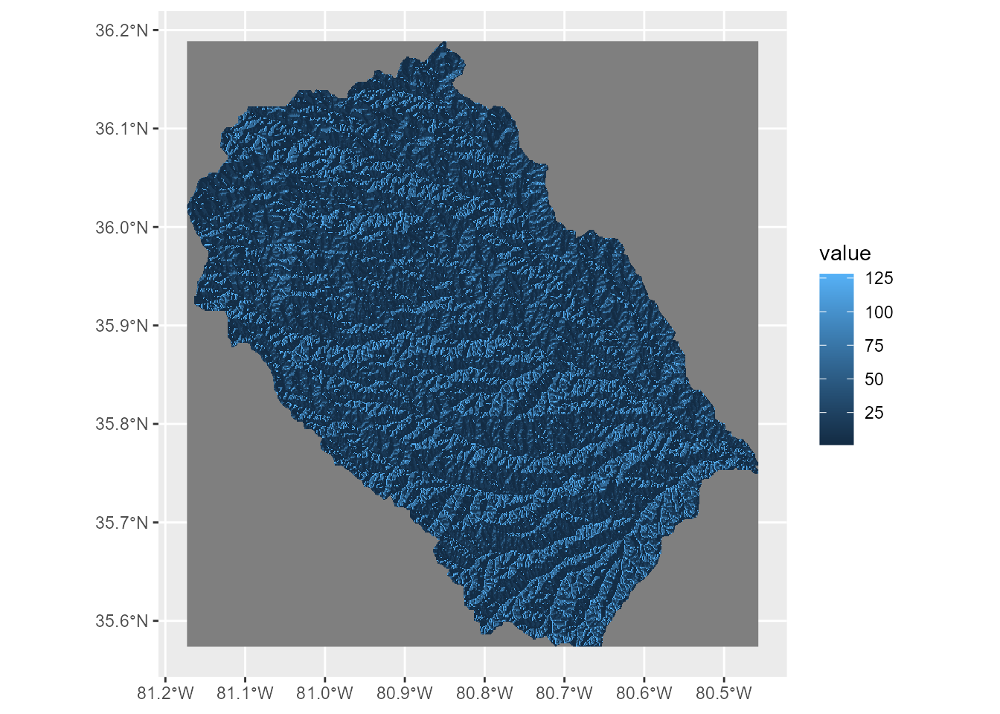
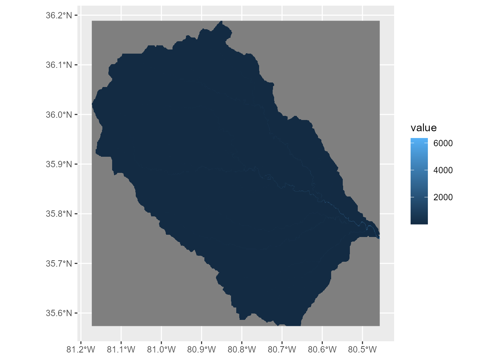
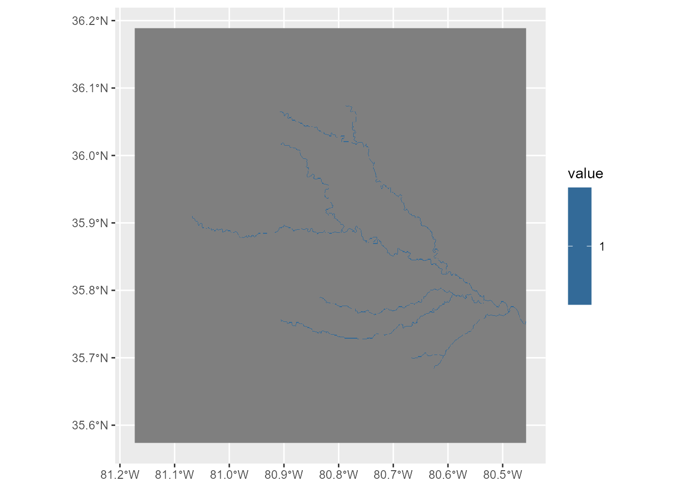
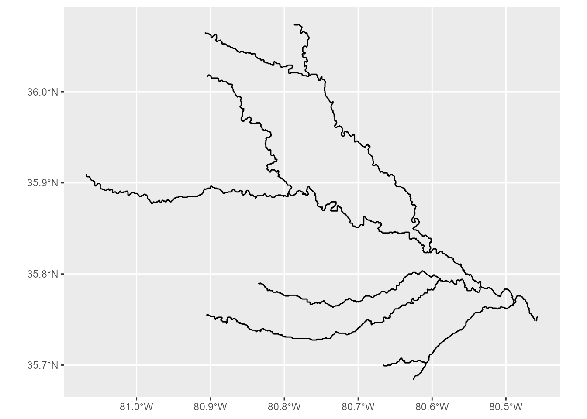
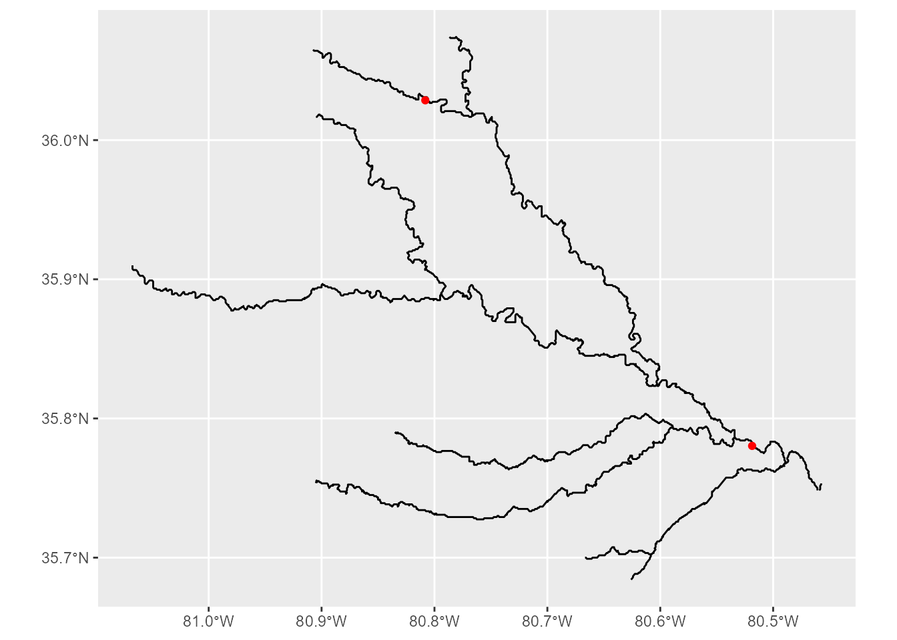
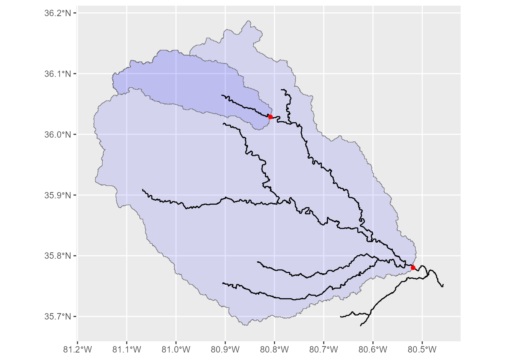
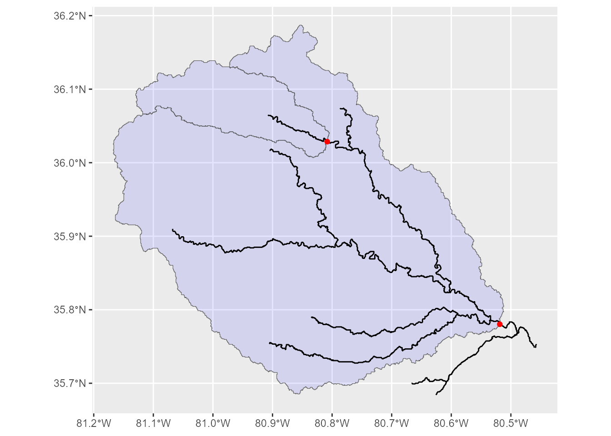

Getting Started
getting-started.RmdIntroduction
The wrapbox package provides tools for extracting stream
networks and delineating watersheds using flow direction and flow
accumulation rasters. This is a wrapper package of whitebox
(see this package
website).
This vignette demonstrates how to:
- Extract stream networks as raster grids from flow accumulation data.
- Convert stream grids into vector stream networks.
- Delineate unnested and nested watersheds using outlet locations.
The example data include a D8 flow direction raster
(dir.tif; flow directions are coded according to ArcGIS)
and an upstream area raster (upa.tif), both provided in the
package. These raster layers were derived from MeritHydro developed by
Yamazaki
et al.
1. Load example data
First, load the required packages and example raster layers.
pacman::p_load(
tidyverse,
wrapbox,
sf,
terra,
tidyterra
)The example rasters are distributed in the raster/
directory. Use system.file() to locate them after
installing the package.
## flow direction layer
dir_file <- system.file(
"raster", "dir.tif",
package = "wrapbox"
)
## flow accumulation layer
upa_file <- system.file(
"raster", "upa.tif",
package = "wrapbox"
)
f_dir <- terra::rast(dir_file)
f_acc <- terra::rast(upa_file)Importantly, however, the flow direction layer must be converted to
Whitebox D8 scheme if source data is coded according to ArcGIS scheme;
otherwise, the Whitebox tools will not function properly and return
erroneous outputs. wrapbox::arc2d8() function performs this
conversion.
f_dir <- arc2d8(f_dir)Inspect the raster properties.
f_dir
#> class : SpatRaster
#> size : 738, 859, 1 (nrow, ncol, nlyr)
#> resolution : 0.0008333333, 0.0008333333 (x, y)
#> extent : -81.17292, -80.45708, 35.57375, 36.18875 (xmin, xmax, ymin, ymax)
#> coord. ref. : lon/lat WGS 84 (EPSG:4326)
#> source(s) : memory
#> varname : dir
#> name : n35w085_dir
#> min value : 1
#> max value : 128
f_acc
#> class : SpatRaster
#> size : 738, 859, 1 (nrow, ncol, nlyr)
#> resolution : 0.0008333333, 0.0008333333 (x, y)
#> extent : -81.17292, -80.45708, 35.57375, 36.18875 (xmin, xmax, ymin, ymax)
#> coord. ref. : lon/lat WGS 84 (EPSG:4326)
#> source : upa.tif
#> name : n35w085_upa
#> min value : 0.006923
#> max value : 6353.152832The flow direction raster (f_dir) represents the
direction of water flow from each cell, whereas the flow accumulation
raster (f_acc) represents the upstream contributing area.
These layers must use compatible spatial extents, resolutions, and
coordinate reference systems.
Visualize the raster layers with
tidyterra::geom_spatraster() function:
## flow direction
ggplot() +
geom_spatraster(data = f_dir)
#> <SpatRaster> resampled to 500528 cells.
## flow accumulation
ggplot() +
geom_spatraster(data = f_acc)
#> <SpatRaster> resampled to 500528 cells.
2. Extract stream networks
2.1. Extract streams as a raster grid
Stream networks can be extracted by applying a threshold to the flow accumulation raster.
The flow2grid() function uses WhiteboxTools to identify
cells whose upstream contributing area exceeds a specified
threshold.
# Define the minimum upstream contributing area
threshold <- 100
# Extract stream grid
str_grid <- flow2grid(
f_acc = f_acc,
threshold = threshold,
output = tempfile(fileext = ".tif")
)The threshold determines the minimum upstream contributing area for
each cell to be considered as an operational “stream.” Smaller
thresholds generally produce denser networks, whereas larger thresholds
retain only larger streams. The output argument determines
the destination of output file – although we used
tempfile(fileext = ".tif") for this example, users may
specify the appropriate location in their repository.
Note: The threshold uses the units of the input flow accumulation raster. Adjust it according to the spatial resolution and units of your data.
Visualize the extracted stream grid.
ggplot() +
geom_spatraster(data = str_grid)
#> <SpatRaster> resampled to 500528 cells.
2.2. Convert stream grids into vector networks
Stream grids can be converted into vector lines using
grid2stream().
The function uses both the flow direction raster and the extracted stream grid to reconstruct the stream network. Please ensure that the flow direction layer conforms the formatting requirements of Whitebox tools (see 1. Load example data).
str_vec <- grid2stream(
f_dir = f_dir,
str_grid = str_grid
)The resulting object is an sf line layer, and
visualization can be done with geom_sf().
ggplot() +
geom_sf(data = str_vec)
An optional output path can be supplied to save the vector network.
str_vec <- grid2stream(
f_dir = f_dir,
str_grid = str_grid,
output = "streams.gpkg"
)3. Delineate watersheds
Watershed delineation requires outlet locations and a flow direction raster.
Outlet locations should be placed on the stream network. By default,
wsd_unnested() and wsd_nested() snap outlet
points to the nearest stream cells before delineating watersheds.
3.1. Define outlet locations
For demonstration, we use a sf layer for outlet points.
Like raster data, the example data are distributed in the
vector/ directory. Use system.file() to locate
them.
## load outlet data file
outlet_file <- system.file(
"vector", "outlet.rds",
package = "wrapbox"
)
## load data
outlet <- readRDS(outlet_file)
## inspect
ggplot() +
geom_sf(data = str_vec) +
geom_sf(data = outlet,
color = "red")
3.2. Unnested watershed delineation
The wsd_unnested() function delineates independent
watersheds for the supplied outlet locations.
wsd <- wsd_unnested(
outlet = outlet,
id_col = "id",
f_dir = f_dir,
str_grid = str_grid,
snap = TRUE,
snap_dist = 5
)
#> Saving temporary files...
#> Snap outlet points to the nearest stream grid...
#> Delineate watersheds...
#> Vectorize raster watersheds...
#> Reading layer `outlet_snap' from data source
#> `C:\Users\a_terui\AppData\Local\Temp\RtmpQrlGfb\wsd_18276_476417426b02\outlet_snap.shp'
#> using driver `ESRI Shapefile'
#> Simple feature collection with 2 features and 2 fields
#> Geometry type: POINT
#> Dimension: XY
#> Bounding box: xmin: -80.80833 ymin: 35.78167 xmax: -80.5175 ymax: 36.03083
#> Geodetic CRS: WGS 84
#> Registered S3 method overwritten by 'stars':
#> method from
#> st_interpolate_aw.stars sfThe resulting object is an sf polygon layer, with one
watershed polygon per outlet. The snap_dist argument
specifies the maximum distance for snapping outlet locations to the
stream network, using the map units of the input raster.
Since the resulting watershed polygons are overlapped with one
another, the watershed polygon for the upstream site has deeper color
(if alpha is less than 1).
ggplot() +
geom_sf(data = wsd,
fill = "blue",
alpha = 0.1) +
geom_sf(data = str_vec) +
geom_sf(data = outlet,
color = "red")
3.3. Nested watershed delineation
Nested watersheds (i.e., watersheds are split into multiple polygons
at each outlet point) can be delineated using
wsd_nested().
wsd_nested <- wsd_nested(
outlet = outlet,
id_col = "id",
f_dir = f_dir,
str_grid = str_grid,
snap = TRUE,
snap_dist = 5
)
#> Saving temporary files...
#> Snap outlet points to the nearest stream grid...
#> Delineate watersheds...
#> Vectorize raster watersheds...
#> Reading layer `outlet_snap' from data source
#> `C:\Users\a_terui\AppData\Local\Temp\RtmpQrlGfb\wsd_18276_476433865a24\outlet_snap.shp'
#> using driver `ESRI Shapefile'
#> Simple feature collection with 2 features and 2 fields
#> Geometry type: POINT
#> Dimension: XY
#> Bounding box: xmin: -80.80833 ymin: 35.78167 xmax: -80.5175 ymax: 36.03083
#> Geodetic CRS: WGS 84The resulting watershed polygons represent nested, non-overlapping drainage areas associated with their respective outlet locations. Because the polygons do not overlap, plotting them with transparent fills does not produce any color variation.
ggplot() +
geom_sf(data = wsd_nested,
fill = "blue",
alpha = 0.1) +
geom_sf(data = str_vec) +
geom_sf(data = outlet,
color = "red")
4. Summary
The main functions are:
| Function | Input | Output |
|---|---|---|
flow2grid() |
Flow accumulation | Stream grid |
grid2stream() |
Flow direction and stream grid | Vector streams |
wsd_unnested() |
Outlet points and flow direction | Unnested watersheds |
wsd_nested() |
Outlet points and flow direction | Nested watersheds |
For additional details about function arguments and implementation, see the package reference documentation.